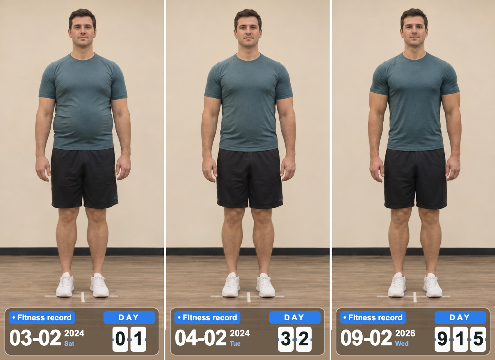

How to take fitness progress photos with a day count
Take each photo from the same spot with the same framing and lighting. A day-count watermark shows when each photo falls in your training plan.

For example, a fictional waist measurement log could read 94 cm → 92 cm → 85 cm. Use measurements you take separately to quantify the change you see in your photos.
In the template settings, keep the label and the date and day count visible. Turn off address, time, temperature, and humidity for this setup.
Set up one repeatable photo spot
- Pick one background with even light. Put the phone at a height you can reproduce, then mark where you stand.
- Use the same framing and neutral pose each time. If you take both front and side views, repeat them in the same order.
- In Timestamp Camera on iPhone, set your plan’s first date as Day 1 in the day-count template. Check the watermark before you shoot.
Compare your starting photo with later milestones
In this example, the plan starts on March 2, 2024 (Day 1). April 2, 2024 is Day 32, and September 2, 2026 is Day 915. Rest days count toward the watermark. Record measurements or session counts in your training log.
What if you miss a photo day?
Keep the original Day 1 date and take the next photo when you can. If your second photo happens on Day 10, keep that label. Later, you’ll know the real interval between the two photos.